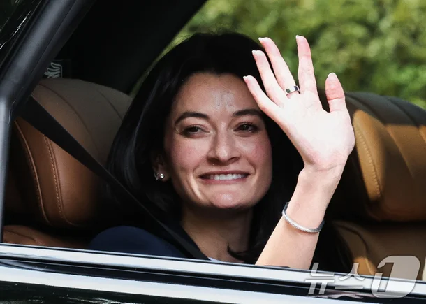

"젠슨황 딸 매디슨이 숨은 실세였다…고함질에 임원 10여명 줄퇴사" : 네이트 뉴스

젠슨 황 전 엔비디아 최고경영자(CEO)의 딸 매디슨(35)이 사실상 아버지의 비서실장 역할을 하며 막후 실세 노릇을 해 왔다고 뉴욕타임스(NYT)가 16일(현지시간) 보도했다.
NYT는 엔비디아 전현직 관계자 10여 명을 인용, 매디슨이 실물AI(피지컬AI) 부문 제품 마케팅 수석이사라는 실제 직함과는 관계없이 조직 위계상 자신보다 상부에 있는 임원들에게도 고함을 지르는 등 거칠고 강압적인 태도로 영향력을 행사했다고 16일(현지시간) 보도했다.
매디슨은 지난 2월 인도 뉴델리 콘퍼런스를 앞두고 발표 준비가 미흡하다는 이유로 제이 푸리 당시 세계현장운영 담당 총괄부사장에게 호통을 쳤다.
당시 회의에 참석했던 3명의 소식통은 NYT에 푸리 부사장이 참다 못해 "소리를 지르지 말라"고 끊어내야 했으며, 결국 그가 6개월 만에 회사를 떠났다고 전했다.
마케팅 팀 회의 도중에는 매디슨의 폭언을 견디지 못한 부사장급 임원 한 사람이 공황 발작을 일으켜 그 자리에서 이탈하는 일까지 벌어졌다.
특히 젠슨 황 사임 후 임시 CEO직을 맡은 콜레트 크레스 최고재무책임자(CFO)와는 로봇회사 투자 및 데이터센터 거래 건으로 사사건건 충돌했다고 NYT는 전했다.
매디슨의 이 같은 폭압적인 태도로 지난 3년간 10여명의 핵심 임원들이 엔비디아를 이탈한 것으로 나타났다.
젠슨 황은 딸의 거친 성향을 잘 알고 있었던 것으로 알려졌다.
그는 '화난 매디슨을 보내겠다'는 식으로 직원들을 위협하며 조심하라고 경고하기도 했다.
대한항공 생각나네 ㅋㅋ